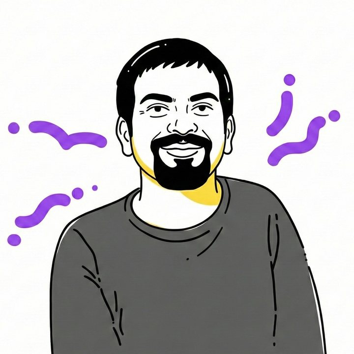

অরিজিৎ ঘোষ
Arijit Ghosh
Postdoctoral fellow at the NIH, studying how the circadian clock and sleep shape each other.
Scroll01About
About
I study how two genetic networks, the circadian clock and sleep, interact to shape behavior. I work with fruit flies, quantitative genetics and statistical models.

Currently I am a visiting postdoctoral fellow at the Laboratory of Systems Genetics, SBC, NHLBI at Bethesda, Maryland. I study the interaction between the circadian clock and sleep genetic networks, and how these interactions shape various behavior and physiological responses. During my PhD, I worked on understanding the genetic and molecular mechanisms underlying complex behaviors, specifically timing of a behavior (chronotypes), under the influence, or independent of the circadian clock, at the Chronobiology and Behavioural Neurogenetics Laboratory, JNCASR.
My studies use diverse methodologies — from statistical modeling of behavior to quantitative genetics and multi-omics techniques. Previously, I have also worked on thermo-sensitive Transient Receptor Potential (TRP) channels and their role in osteogenesis, using rodent models, primary bone cells, pharmacological modulators, and molecular dynamics during my masters studies at NISER.
I was born in Burdwan, WB, India. I went to RKMV, Purulia and RKMV, Narendrapur for schooling, then joined NISER, Bhubaneswar for an integrated MSc in Life Sciences with focus on cell biology and bioinformatics. After my PhD from JNCASR in Bangalore, I moved to Bethesda, MD to join the NIH. Apart from lab work, I am a leisure photographer, connoisseur of sci-fi and good food! For a full list of my publications, check out my Google Scholar profile.
02Research
Behavior as rhythms
and hidden states.
Reading an actogram
Chronobiologists read behavior as an actogram: every row is a day, plotted twice side by side so rhythms that cross midnight stay readable. A fruit fly's activity bunches around dawn and dusk — the morning and evening peaks — with a siesta in between.
Switch the lights off for good and the peaks keep coming. They drift a little each day because the internal clock's free-running period, τ, isn't exactly 24 hours. Drag the slider to change it.
Inferring sleep states
Fly sleep varies in depth, from light to deep. Hidden Markov models infer these unobserved states from movement data alone, which lets us map the genes that shape each state.
2015–2026
co-first author
03Latest
Recent news.
-
Received the SRBR Merit Award by the Society for Research on Biological Rhythms (2026), USA.
-
Posted a Preprint on sleep state inference using HMMs in flies and an associated R package, FlyDreamR.
-
Received the Sleep and Circadian Science Scholar Award by the Sleep Research Society (2025). Presenting at Advances in Sleep and Circadian Sciences 2025, Clearwater Beach, FL.
-
Received the Lenfant Fellowship from NHLBI for postdoctoral training (intramural equivalent to the F32).
-
Collaborative paper with Dragana Protic's group is out! Check it here.
-
Our book chapter is published. Check it out!
-
Attended SRBR 2024 at San Juan, PR. Received a merit award at the conference.
04Selected work
Selected papers.
All 15 publications- 2026 Inferring the genetic basis of sleep states in Drosophila melanogaster using hidden Markov models
- 2024 The Genetics of Sleep in Drosophila
- 2023 TRPV4 regulates osteoblast differentiation and mitochondrial function that are relevant for channelopathy
- 2022 VANESSA — Shiny Apps for Accelerated Time-series Analysis and Visualization of Drosophila Circadian Rhythm and Sleep Data
- 2017 Preferential selection of Arginine at the lipid-water-interface of TRPV1 during vertebrate evolution correlates with its snorkeling behaviour and cholesterol interaction
- 2016 Why individual thermo sensation and pain perception varies? Clue of disruptive mutations in TRPVs from 2504 human genome data